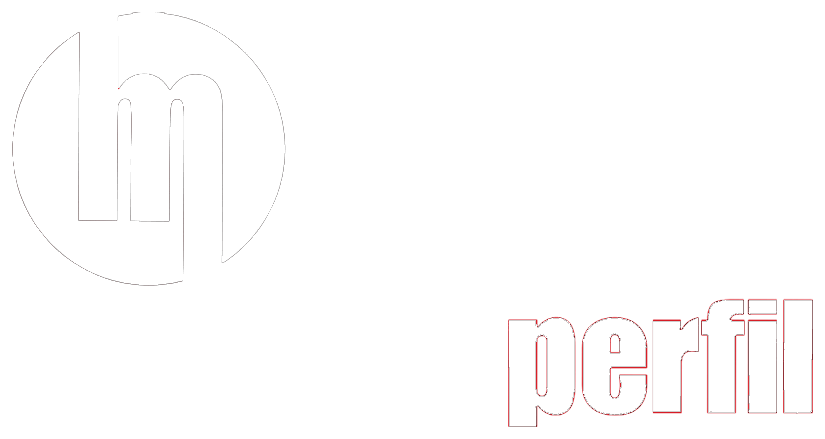
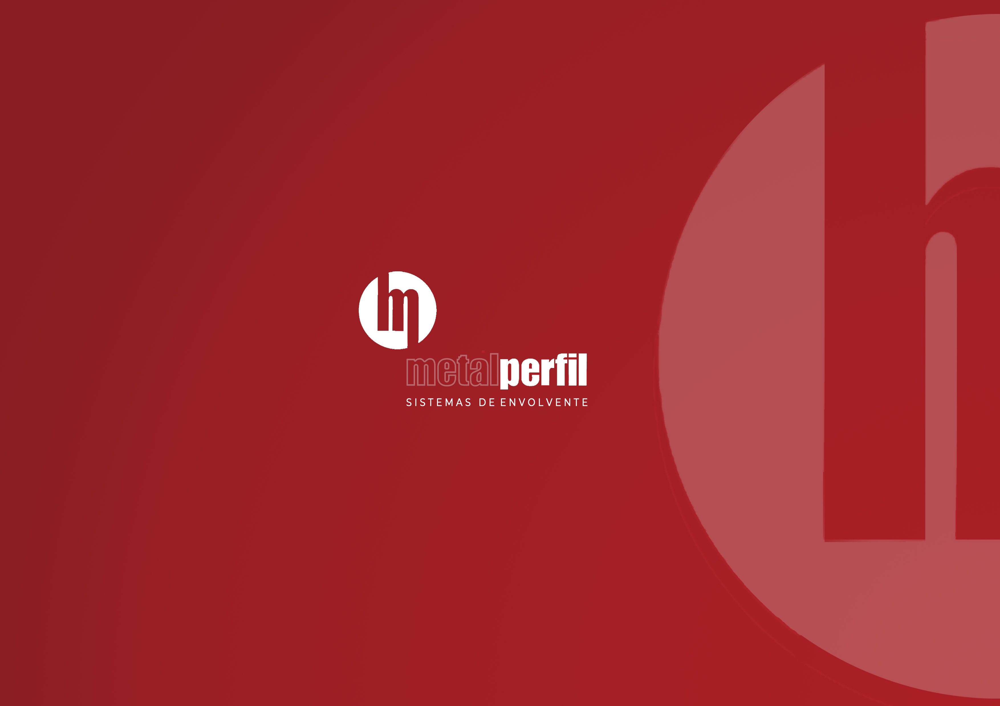
Precisión técnica y libertad creativa para la fachada contemporánea.
El elemento de anclaje forma parte del lenguaje de la fachada: marca un ritmo visible y honesto, con montaje accesible y registrable.
La superficie se lee continua y limpia, sin anclajes a la vista, para una piel tersa y monolítica de gran nivel de acabado.
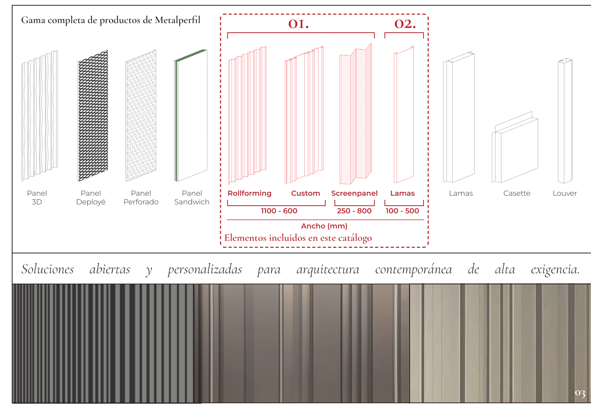
Especialistas en sistemas de revestimiento metálico de alta gama. Nuestra nueva colección fusiona precisión técnica y libertad creativa, ofreciendo soluciones de fachada que transforman cada proyecto en un hito de diseño contemporáneo.
Sistemas de fijación vista y oculta, fabricados a medida en acero, galvanizado, prelacado e inoxidable.
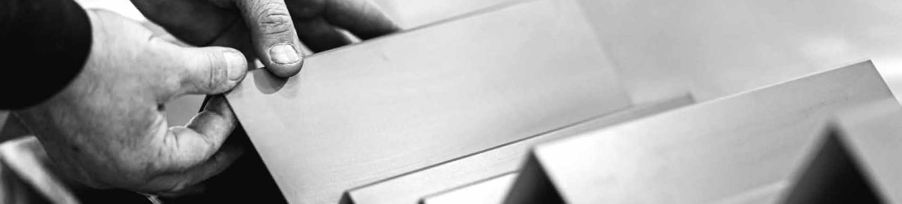
Aquí irá el relato de la empresa: trayectoria, valores y el proceso con el que se fabrican las planchas metálicas. Sustituir con el texto definitivo de «Origen» (catálogo, páginas 8–9).
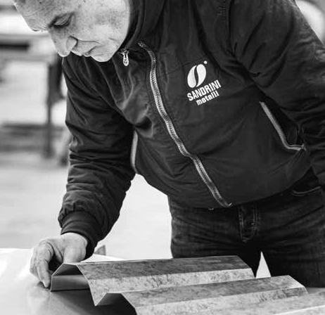
Misma idea, diferentes reglas
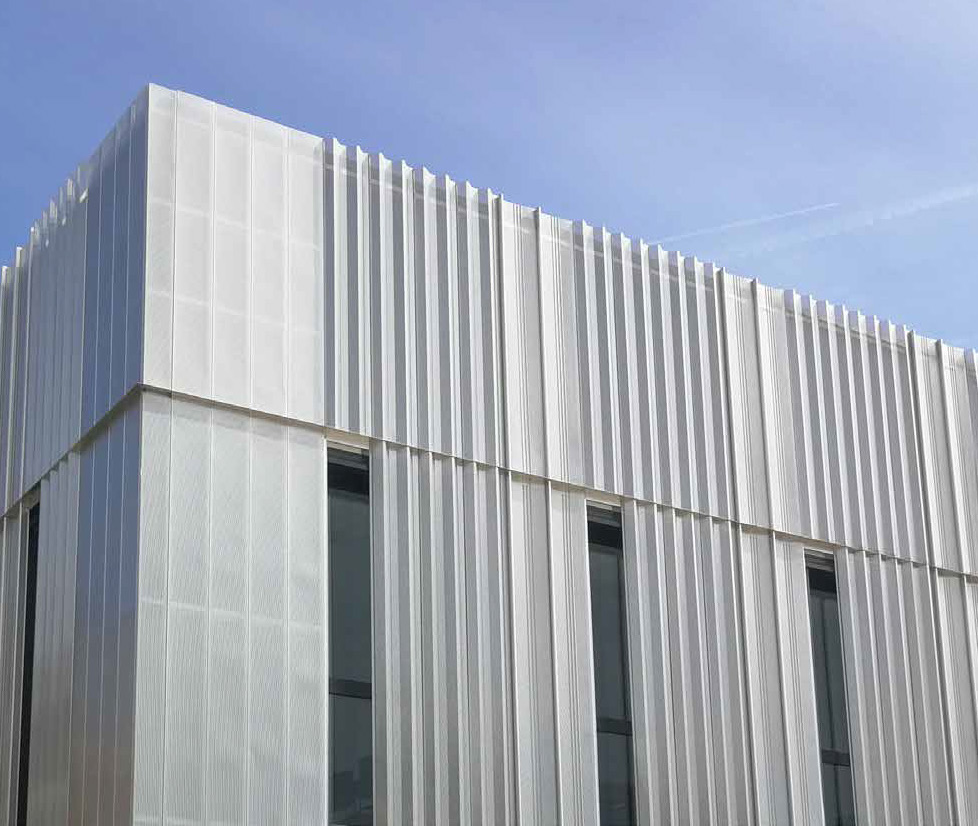
Cada proyecto exige su propio traje. Metalperfil ofrece sistemas de fijación vista y sistemas de fijación oculta: soluciones abiertas y personalizadas que se adaptan a la geometría, el despiece y la intención de cada fachada.
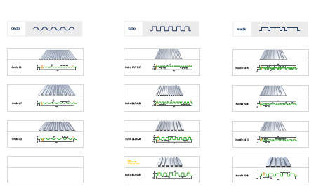
Infinitas posibilidades. Texto pendiente de redacción definitiva (catálogo, páginas 10–11). Ampliar con el detalle de cada sistema de fijación y sus reglas de montaje.
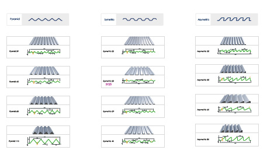
Fijación vista: el elemento de anclaje forma parte del lenguaje de la fachada, marcando un ritmo visible y honesto.
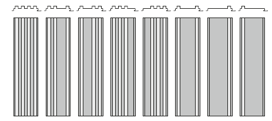
Fijación oculta: la superficie se lee continua y limpia, sin anclajes a la vista, para una piel tersa y monolítica.
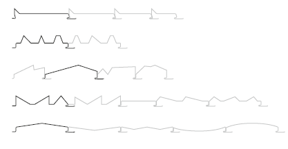
Cada sistema sigue sus propias reglas de despiece, junta y solape — pero parten de la misma idea: una envolvente hecha a medida.
Casi cualquier acabado es posible: del galvanizado técnico al corten que envejece con el edificio.
Cada perfil de la colección puede fabricarse en distintos soportes metálicos, espesores (0,6–1,00 mm) y acabados, con la carta RAL completa, efectos especiales y opción de perforado.
Base de acero con recubrimiento de zinc o aleación aluminio-zinc (Aluzinc): protección anticorrosión de altas prestaciones y aspecto técnico.
Galvanizado + imprimación + pintura de poliéster horneada. Disponible en toda la carta RAL y en acabados de alta durabilidad (PVDF).
Máxima resistencia y durabilidad, con acabados del pulido espejo al satinado y al arenado mate.
Acero patinable que desarrolla una pátina oxidada estable: estética cálida e industrial y protección natural que evoluciona con el tiempo.
Soportes ligeros y nobles para proyectos de alta exigencia, con su envejecimiento y color característicos.
Cualquier perfil admite chapa perforada para soluciones acústicas o de filtro de luz, con patrones redondo, cuadrado o a medida y distintos grados de paso.
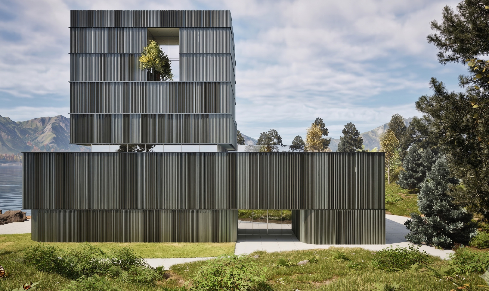
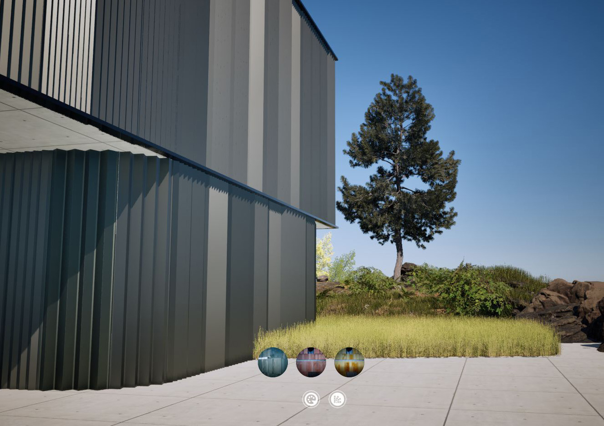
Cada sistema, listo para tu proyecto BIM.
Los perfiles Metalperfil se entregan como objetos BIM con la geometría real del perfil, sus materiales y sus datos técnicos, para documentar, medir y coordinar la fachada desde las fases iniciales del proyecto.
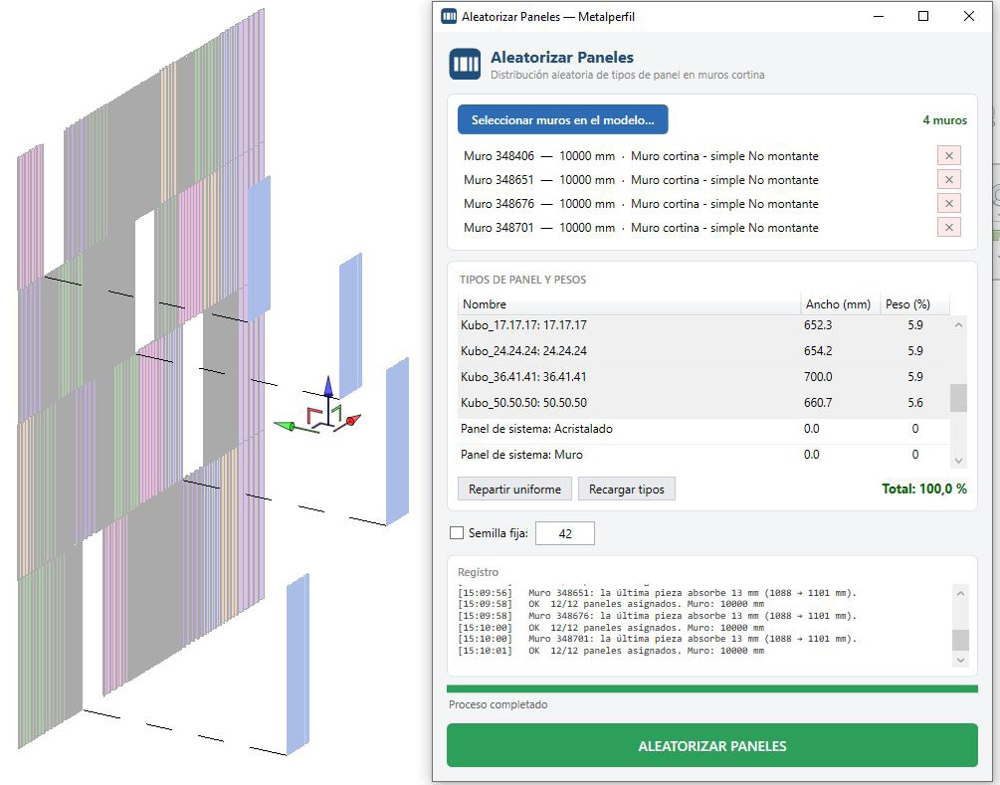
Objetos Revit (.rfa) con los tipos y dimensiones reales de cada familia, ajustables por parámetros, y exportación IFC para integrarse en cualquier software BIM (Revit, ArchiCAD, Allplan…).
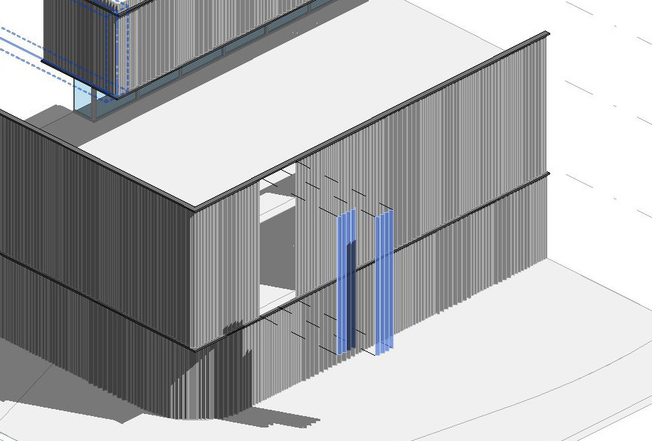
Material, espesor, acabado, ancho útil y peso embebidos para medición y especificación; geometría por nivel de desarrollo (LOD 200–350) según fase y pensada para no penalizar el modelo de coordinación. Descarga directa por familia y tipo (próximamente).
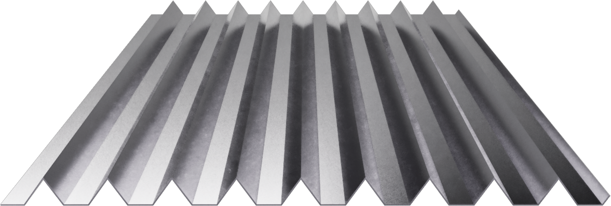
Más allá del modelo BIM, cada perfil cuenta con un visor 3D interactivo en el navegador —rotación 360°, cambio de tipo y de color RAL en tiempo real— y acceso por código QR desde el catálogo impreso y la propia obra, para consultar la ficha técnica, ver la geometría y descargar el modelo al instante. Una capa digital que acerca el producto al prescriptor y agiliza la decisión en proyecto.
Cuéntanos tu proyecto y te asesoramos sobre el sistema, el perfil y el acabado más adecuados.